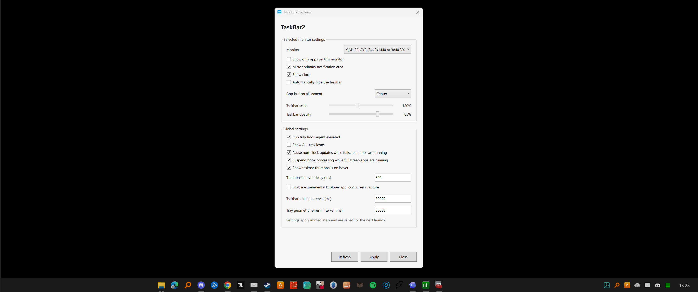

Mirrors the real order
Pinned and running apps follow the primary taskbar order so secondary monitors feel familiar.
A Windows 11 taskbar for secondary monitors, with mirrored apps, pinned icons, tray icons, clock, hover previews, and per-monitor settings.

Pinned and running apps follow the primary taskbar order so secondary monitors feel familiar.
Tray icons, badges, clicks, and context menus are mirrored from supported Windows apps.
Set scale, opacity, alignment, clock visibility, notification area visibility, and auto-hide per monitor.